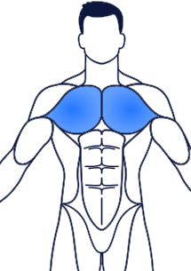

Chest Workout

A well-rounded chest workout targets the pectoralis major and pectoralis minor muscles, promoting strength and aesthetics. Incorporating a variety of exercises not only helps build mass but also enhances muscle definition.
Key Benefits:
- Increased Upper Body Strength: Essential for daily activities and overall fitness.
- Improved Posture: Strengthening the chest can help counteract slouching.
- Enhanced Athletic Performance: A strong chest contributes to better performance in sports and activities that require pushing movements.
Popular Exercises:
- Bench Press: A classic compound exercise that builds overall chest mass.
- Incline Dumbbell Press: Focuses on the upper chest for balanced development.
- Chest Flys: Isolates the pectoral muscles for increased definition.
- Push-Ups: A versatile bodyweight exercise that engages multiple muscle groups.